vamo, vamo, vamo…
Ex-sedentário
Claudio em fatos
97 years
by Claudião
in Ex-sedentário
Como fatos dizem mais do que 1000 palavras de lamentação, lá vai:
Nome: Claudio … Dundes
Tempo parado: 25 dias.
Terça-Feira 27.07.2010
Peso: 108 quilos
Treino: 3km em 26Min08Seg – 91 voltas de 33 metros, cada. Tempo médio por volta: 17Seg
Inspiração do dia: treino em pista do Jorge Cerqueira
Percepção de esforço: mais fácil do que imaginei que fosse
Estado emocional: 10 (estou feliz)

Legenda – traçados:
Vermelho: micro circuito do treino – entorno da casa que eu moro
Amarelo: extensão total do terreno – incluindo casa do Tio, do lado, e a casa do Vô da Mari, alugada, só passei a cerca uma vez, para pegar jaca.
Marron/beje: meu sonho de consumo – se eu ficasse rico compraria tudo isso para mim, mas será vendido muito antes disso acontecer
Azul: portões
Azul calcinha (mais parece verde claro): limitação do espaço do Cachorro Bento – só pode correr livre até ali, tadinho rs…
Treinos da semana
47 years
by Thiago Zamith
in Ex-sedentário
Na ultima semana de férias do trabalho consegui treinar um pouco, na semana anterior não foi possível choveram todos os dias.
Os treinos da semana passada foram apenas três todos realizados no Ibirapuera, segunda corri 18 km, terça 12 km e quinta 24 km treino esse que valeu por um longão já que sexta, sábado e domingo eu não treinei, amanhã volto à rotina de treinos aqui no Museu do Ipiranga, preciso pegar firme.
Semana retrasada fiz minha inscrição pra Meia Maratona de São Bernardo do Campo depois faço um novo post contando como foi.

Caminhada até Pedra Grande – Atibaia
77 years
by Ana Shibata
in Ex-sedentário
Não tenho treinado como meus colegas de post, ainda levo uma vida meio sedentária ou está faltando um pouco mais de disciplina, pois o clima de férias escolares e o friozinho estão me deixando preguiçosa.
Entretanto, esporadicamente tenho feito alguma coisa, alguma peripécia.
Tentei conciliar a ida do maridão ao Rio de Janeiro para correr…….. mas o queridão perdeu o rumo, atravessamos o Túnel Rebouças que nos leva ao outro lado da cidade, literalmente e quando conseguimos voltar a Lagoa já tinha perdido o horário de apresentação. Imaginem meu bico!!! Fiquei hiper-super-mega mal humorada………. tinha me preparado tanto psicologicamente para os 7,5km…….. bom nem preciso comentar a frustração…….
Mas nada como um feriadão para abafar a frustração. Fomos comemorar o niver da Melinha em Atibaia e eu como uma mãe esportista fiz um convite meio que intimidador, mas ao mesmo tempo desafiador………. Vamos fazer a trilha da Pedra Grande eu, você e o Igor?! Já tinha esquematizado mentalmente tudo, o maridão ficaria com a Sy, pois está se recuperando da última crise de gota.
Melinha já fez essa caminhada (trilha) 2 outras vezes, mas há anos atrás, a primeira foi com o maridão e como a Sy era pequenina fiquei em casa, nesta caminhada somente de ida levaram 6 hs, descontando o fato de ser caminho novo para eles e paradas para fotos, o dia estava muito quente e eles saíram de casa no meio da manhã……. Alega o maridão que o pedido de resgate foi por conta de que Melinha estava cansada……. na verdade acho que ele não agüentou, porque no penúltimo lance de subida na pedra ele apenas demorou uns 20 minutos e Melinha foi 2 vezes ao encontro dele…….. e nós já estávamos aguardando-os de carro. Neste episódio depois de chegarmos em casa, eles terem tomado aquele banho e feito a merecida refeição o maridão teve crises forte de caimbras nas pernas no início do repouso. (…. selecionando fotos)


VISTA-TRILHA-PEDRA-GRANDE- 012 – melinha na mangueira
17GO2003-010
 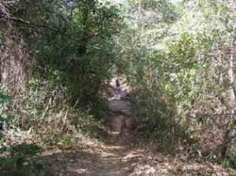
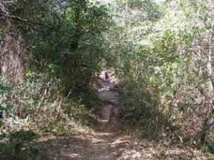
TRILHA-PEDRA-GRANDE-019 TRILHA-PEDRA-GRANDE-021


TRILHA-PEDRA-GRANDE-022 TRILHA-PEDRA-GRANDE-023
 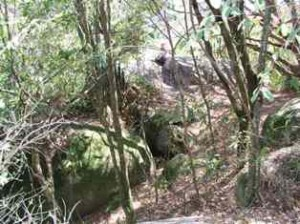
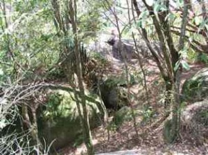
TRILHA-PEDRA-GRANDE-078 TRILHA-PEDRA-GRANDE-086


TRILHA-PEDRA-GRANDE-055 TRILHA-PEDRA-GRANDE-056
 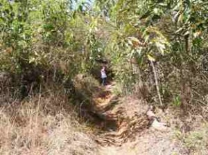
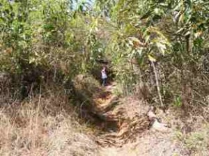
TRILHA-PEDRA-GRANDE-127 TRILHA-PEDRA-GRANDE-128
 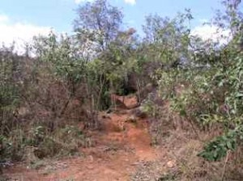
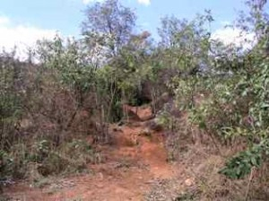
TRILHA-PEDRA-GRANDE-176 TRILHA-PEDRA-GRANDE-177


TRILHA-PEDRA-GRANDE-184 TRILHA-PEDRA-GRANDE-190


TRILHA-PEDRA-GRANDE-201 TRILHA-PEDRA-GRANDE-205
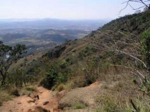 
TRILHA-PEDRA-GRANDE-209 TRILHA-PEDRA-GRANDE-211
Siga o link abaixo e veja todas as fotos
http://anarun.myphotoalbum.com/view_album.php?set_albumName=album01
A segunda vez que eles fizeram a trilha a Pedra Grande foi no meu aniversário (outubro) que não me recordo o ano agora, mas desta vez foram em um grupo de +- 70 pessoas da empresa do maridão e o percurso seria ida e volta. Saíram as 7 hs e no meio da tarde já estavam em casa. Foram recebidos com churrasco. Via-se a exaustão do percurso, mas todos alegres e sem ter conhecimento do meu natalício acabaram cantando os Parabéns com direito a um pedaço de bolo…. Desta vez também não fui, como uma boa anfitriã fiquei para organizar o churrasco e aguardar o pessoal. (…. selecionando fotos)
Eis a oportunidade que me aguardava agora eu poderia estar fazendo/desbravando a Trilha da Pedra Grande. Eu pensei em subir e o maridão ir nos buscar de carro, ledo engano, quando eu disse que iríamos fazer a trilha ele nos intimidou e disse que deveríamos subir e descer!!! Sem apoio, sem mordomia de nos buscar de carro. É preciso deixar claro o grande sarcasmo do maridão, porque ele achava que eu não conseguiria, aliás, aquele apoio bem incentivador, um companheirismo ímpar……rs …. eu nem ligo.
Na sexta a noite (09/07) passamos no supermercado para comprar barrinhas de cereal e cookies de aveia para o percurso. Depois em casa enchemos as garrafas de água, jantamos e eu fui dormir não tão tarde, pois o combinado era sairmos as 7 hs.
O celular me despertou as 6 hs, acordei a turma e tratei de tomar meu banho, depois tomamos o café da manhã, arrumamos as mochilas e o maridão foi nos levar ao pé da trilha.
Aqui cabe um comentário sobre a Pedra Grande, existem várias trilhas para alcançar o pico da Pedra Grande, a que Melinha foi às outras 2 vezes é uma que fica perto do Condomínio Panorama, perto das torres de antenas.
Pesquisando na internet, pois queria informar dados mais técnicos (não encontrei nada, sniff), fiquei sabendo que existem 3 opções de trilhas: das “Mangueiras”, a dos “Monges” e a da “Minha Deusa”. Na verdade não sei qual trilhamos, mas um pouco antes de chegarmos no grande mirante e na plataforma de 22.400 metros quadrados elas se encontram e nos levam a um mundo fantástico de grandes pedras e mirantes sensacionais.
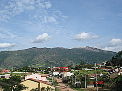
01 – Vista da Montanha Pedra Grande
A Pedra Grande com 1.450 m é o ponto mais alto de Atibaia. De lá pode avistar-se até os municípios vizinhos (Bragança Paulista, Piracaia, Jundiaí, Nazaré…). Para os mais corajosos há a possibilidade de saltar de asa-delta e parapente. Também existe o acesso de carro pela Rodovia D. Pedro I, km 65.
Começamos a trilha as 8hs20 min, acertamos nossos cronômetros, o sol estava presente e ainda tímido, com nevoeiro que poderão ser percebidos pelas fotos.

02- saída de casa

03 – Pedra Grande ao fundo

04 – início da trilha
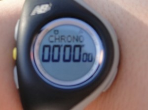
07 – cronometrando
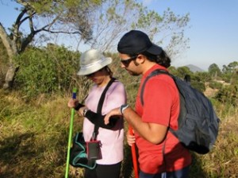
08 – ajustando cronometro

09 – início da subida
A trilha é desafiadora, enquanto subida não assusta, mas a descida seria brava, porque numa parte do trecho a terra é amarela com miúdas pedrinhas soltas e bastante íngremes. A paisagem é linda e você fica observando a cidade cada vez menor. Existem muitas pedras no meio do caminho cuja parada é obrigatória para contemplação e fotos.

14 – obstáculos do percurso
Durante a trilha encontramos 2 corredores e, em virtude de um deles estar usando uma regata da corrida de montanha de 2000 eu o indaguei se iria participar da corrida do final do mês, sendo sua resposta afirmativa. Eu não tinha reparado no tênis, mas segundo o Igor (meu norinho) o tênis parecia ser o de corrida. Estranhei porque eu também estava usando um e escorreguei muito, não achei o tênis apropriado para corrida naquelas circunstâncias.
Chegamos ao topo com quase 4 hs, descansamos e contemplamos a paisagem por uns 15/20 min para nosso retorno. O Igor ficou bastante frustrado quando não viu o carrinho que vende pastel e caldo de cana (segundo o maridão existe o tal carrinho e eu disse que seria nosso prêmio), mas comemos as bananas e um pouco de cookies de aveia.
A descida como eu previ foi com calma e vários escorregões (terra solta e descidas íngrimes), meu medo foi o de ficar muito machucada e precisar de resgate, porque durante a descida não encontramos muitos caminhantes e o celular as vezes fica sem sinal e como dizer onde estar, não existem marcos. Agora o sol já estava mais forte e durante quase todo o percurso não há sombra.
Por toda a trilha existem sulcos (alguns com pequenas elevações que sinalizam ser pequenos degraus, mas profundos) que nos auxiliam tanto na subida quanto na descida. No retorno foi providencial esses sulcos e, como não cabem as 2 pernas paralelas eu as usei para uma servir de apoio de forma a não escorregar pirambeira abaixo (imaginando a cena, seria com quase andar de cócoras). Com isso acabei forçando o joelho e senti um pouco a parte anterior que veio fisgando 3/2 da descida. Numa das paradas Melinha fez uma massagem que providencialmente parou de doer (acho que foi por conta de não ter feito alongamento para a descida).

40 – visão dos sulcos na trilha
Depois de termos passado pela mangueira quase no final do caminho encontramos o maridão e a Sy que vieram nos buscar no final da trilha.
Acho que eu conseguiria chegar até em casa a pé (talvez mais uns 20/30 min de caminhada em terreno plano), mas a maioria ganhou e voltamos de carro.
O percurso total foi de 7hs9min e, somente a descida 2hs49min.

72 – tempo final da caminhada ida e volta

73 – tempo de descida
As dores do pós caminhada ocorreram somente no domingo e acentuado na segunda para mim. Como forcei muito as coxas a dor perto do joelho foram maiores com o sentar e levantar-se do dia a dia.
Para minha surpresa Melinha me disse na terça (13/07) que podíamos repetir a façanha todo mês já que eu quero participar de uma corrida de montanha. Eu fiquei surpresa, mas não com medo.
Tai, um desafio tentador….
(ainda estou postando as fotos!!! CONFIRAM)

Minha homenagem ao Dia do Homem – 15/VII/2010
27 years
by Ana Shibata
in Ex-sedentário


Levando em consideração que somos resultado
de uma costela do homem, nada mais justo do que prestarmos
uma homenagem a eles criando o Dia Internacional do Homem.
 Quem se veste como pingüim no dia do matrimônio?
Quem se veste como pingüim no dia do matrimônio?
O humilde homem!

Quem corre o risco de ser assaltado e morto na saída da boate,
cada vez que participa dessas reuniões noturnas com os amigos,
enquanto a mulher está bem segura em casa na sua caminha?
O desprotegido homem!

Quem é o encarregado de matar as baratas da casa?
O valente homem!  Quem apanha quando chega em casa com marca de batom na camisa
Quem apanha quando chega em casa com marca de batom na camisa
e é obrigado a dar explicações que nunca são aceitas?
O incompreendido homem!

Quem é que toma banho e se veste em menos de vinte minutos?
O ágil homem!

O ágil homem!
Quem é que tem de gastar consideráveis
somas em dinheiro comprando presentes para o dia das mães,
da esposa, da secretária e outras festas inventadas
pelo homem para satisfazer à mulher?
O generoso homem!

somas em dinheiro comprando presentes para o dia das mães,
da esposa, da secretária e outras festas inventadas
pelo homem para satisfazer à mulher?
O generoso homem!
Quem jamais conta uma mentira?
O ético homem!

O ético homem!
A tortura de ter que usar terno no verão?
O sofrido homem! O suplício de fazer a barba todo dia?
O suplício de fazer a barba todo dia?
O sacrificado homem!
O sofrido homem!
O suplício de fazer a barba todo dia?O sacrificado homem!
O desespero de uma cueca apertada?
O mártir homem!
 Ter sempre que resolver os problemas do seu carro
Ter sempre que resolver os problemas do seu carroe de suas mulheres também?
O inteligente homem!

Ter a obrigação de ser um atleta sexual?
O vigoroso homem!

Ter que reparar que ela trocou a tintura do cabelo
de Imédia 13 para 731 louro bege salmon plus up light forever?
O observador homem!

de Imédia 13 para 731 louro bege salmon plus up light forever?
O observador homem!
Ter que jamais dizer que ela engordou,
mesmo que isto seja a pura verdade?
O leal homem!

mesmo que isto seja a pura verdade?
O leal homem!
Trabalhar prá caramba em prol de uma família
que reclama que você trabalha prá caramba?
O batalhador homem!

que reclama que você trabalha prá caramba?
O batalhador homem!
Quem tem que passar por TPM calado, todo mês?
O calmo homem!
O calmo homem!
 Ter que agüentar a sogra que chega
Ter que agüentar a sogra que chega
para ficar três dias em casa e acaba ficando três meses?
O submisso homem!
Sem falar, de ter que bancar algumas mulheres,
todas as suas vaidades, frescuras, plásticas e outras cositas mais.
O Santo Homem!

Quem está lendo isso às escondidas para poder dar boas risadas,
já que se for surpreendido corre o risco de ser massacrado?
O indefeso homem!
já que se for surpreendido corre o risco de ser massacrado?
O indefeso homem!

Homens: Isto é uma brincadeira para que você possa
também sorrir conosco neste dia.
Fica aqui registrado toda nossa gratidão e respeito
e o reconhecimento de que sem vocês nada seriamos.
Amamos vocês!
Estou de férias e treinando
57 years
by Thiago Zamith
in Ex-sedentário
Faz tempo que não escrevo aqui é a preguiça de férias, mas estou treinando.
Semana passada na segunda feira fiz um treino de 18km na volta de 6km no Parque do Ibirapuera, meus treinos de férias vão ser lá , na terça foram mas 12km e quinta mais 12, sexta feira não treinei viajei pra Ubatuba e lá fiz um treino de 16km pela rio-santos.
Essa semana resolvi não treinar na segunda e hoje terça feira de uma chuva brava então nem pensar.
Vou colocar aqui o trajetos dos treinos no Ibirapuera essa volta de 6km é praticamente um cross country é bem divertido, Claudião podemos marcar um longão lá.

Meu post de hoje é um link
57 years
by Claudião
in Ex-sedentário
Rever o Enio foi legal demais. Um parceiro para somar ao que já vem sendo para mim o Alecão e o Thiago (e outros).
Conheci o Carlos Hideaki Fujinaga. Não se foi a primeira experiência dele, mas o Hideaki viveu como é conversar com um recém apresentado que já tinha lido exatamente tudo que ele escreveu na internet (sobre corridas) até agora. Para mim foi muito rico nosso encontro, não apenas em calorias, mas em papos, ora amenos, ora sobre opiniões que se divergem, polemizam-se, enfim… O que ele disse sobre “zerar nossa história de superação/adversidade” antes de dar o passo rumo a maratona, não sai da minha cabeça. Penso tratar-se uma postura que se adotada, efetivamente, pode ser determinante: deixar fora de alacance qualquer “desculpa” de um insucesso. Mas isto é assunto para aqueles meus posts auto-exorcizantes.

5º Desafio da Mata Atlântica – 2ª Parte
97 years
by Claudião
in Ex-sedentário
Quem estiver chegando agora, não deixe de ver o post anterior, onde há a impressão do Alex e as fotos, cuja maioria completa o sentido das que postarei agora.
Antes de tudo, parabenizo o meu grande parceiro Alecão, que com gripe e tudo mandou ver na Serra. Sua caminhada foi 10 e o seu espírito 1000. Com você foi tudo mais mágico, primão: eu te amo!
O dia não poderia ter sido mais especial. Durante a semana eu ameacei várias vezes vir aqui chorar a minha fraquesa e os quilos que só fazem aumentar. Mas em vez disso eu decidi sorrir na Serra.
A prova foi maravilhosa, com uma organização muito boa, diante de toda a logística envolvida. Desce-e-sobe de atletas e volumes, tudo pela Rodovia Anchieta. Sobe-e-desce de motoqueiros, pela própria pista, atentos e dipostos a ajudar a quem precisasse. Sou só elogios.


Muitos já foram os comentários. Todos efusivos que me deixam muito emocionado. Não tenho palavras para expressar a felicidade que sinto por tanto carinho e consideração com quem não tem o corpo de atleta amador. Sinto-me honrado pelo reconhecimento do “amador” que sou da atividade, interatividade e festividade com algo que é realmente bom. O corredor amigo que há muito nos acompanha no blog, Sandro Guedes, foi logo comentado sobre o nosso incentivo a galera. Valeu Sandro!!!!
Na prova, fomos nós mesmos, brincalhões. Atazanamos a todos. E o sorriso de aprovação não tem preço. Eu desejo muito que as pessoas que conhecemos venham até aqui resgatar as imagens e principalmente receber nosso caloroso abraço e consideração.
O Enio, coitado, foi pego no laço pelo Baleia Mor – Miguel Delgado – e preso com peia firme. E não ratiou, gostou até. O cara é um Santo. Já é amigo, viu. Sorte ou sina? O tempo lhe dirá… Se eu já sonhava maratonar por aí, sua história, incentivo e disposição para ajudar/participar, só fizeram aumentar esse sonho. Eu vou diminuir minhas recaídas, vou parar de aparecer mais gordo e mais magro em cada fotografia, e vou no caminho certo. Não foi apenas um encontro de Ex-Sedentários Baleias com integrante Baleia. Foi uma junção mesmo de amizade muito bacana. Valeu Miguel!


Sobre as pessoas da prova. Muitas me marcaram. Eu não sou sensitivo nem nada que o valha. Mas quando o Sr. Ítalo aproximou de mim com aquele sorrisão, senti uma energia muito forte, muito positiva. Senti como se meu pai tivesse aparecido ali. Senhor de 70 anos, com uma felicidade incrível fazendo aquele maravilhoso passeio junto do Filho, Ricardo, celebração pura. Além dele, inesquecível a imagem da Senhora Rosana. A felicidade dela se aproximando da chegada foi espetacular. São as duas imagens de força e felicidade que eu registrei para mim, e em fotografias (tomara que eles as encontrem por aqui).


Além deles houve as pessoas como nós, que se divertiram conosco e nos acolheram com a primeira olhada. Nas fotos se vê os Dundes (Claudio e Alex) e o Duendes da Serra. As Garotas Super Cor-de-Rosas, super simpáticas e super atletas, da equipe Lamartine: Heleni, Solange e Rosa. Eu espero vê-las muitas outras vezes.


Tirei muitas fotos bonitas do Cesar Conforti, que subiu decidido todo o percurso não demorando para deixar-nos para trás. Parabéns a você e a Helga (as fotos de vocês ficaram legais demais).


Outro abraço para a Vanessa e Luciana, troca de máquinas, fotos e poses e muitos sorrisos. Enfim, foi tudo muito maravilhoso e com certeza estou cometendo o grave pecado do esquecimento. Perdoem-me os não citados. Ah, engraçada demais a cena da Tomiko entre mim e o Alecão. Ela virou um cisquinho.
Mais uma vez agradeço ao trabalho técnico do Alecão que cuidou de todas as fotografias aqui.


.jpg "5-desafio-mata-atlantica")
5º Desafio da Mata Atlântica
127 years
by Alecão
in Ex-sedentário
Estava gripado e sem coragem de ir, mas o Thiago me incentivou e o Claudio também. E fui. Não me arrependi, foi maravilhoso mesmo com a gripe piorando quando cheguei em casa (tive muitas dores, nausea, ansia e febre), mas nada que um analgésico e 4 horas de soneca não resolvessem. To com gostinho de quero mais…
Nesta prova tivemos a oportunidade de conhecer o Enio integrante dos Baleias, muito bacana, gostei mesmo dele, nos incentivou bastante.
Sem mais enrolação, estou colocando as fotos que tiramos… São mais de 200 e tem mais para colocar, volte depois e olhe as fotos novas. Tem vídeo também que ainda estou editando e colocarei em outro post.
5º Desafio da Mata Atlântica – em construção
47 years
by Claudião
in Ex-sedentário
A todos os amigos e aos novos amigos da caminhada da Serra do Mar. São muitas as fotografias, por isso, o Alex está vendo a melhor forma de disponibilizá-las. Por favor, voltem aqui para conferí-las e copiá-las. A todos com quem conversei, cumprimentei, fotografei e azucrinei, fica o meu o carinho, incentivo e muita festa. E se abusei, desculpem-me. Empolgo-me demais, às vezes (Está bem Alex, eu digo a verdade: me empolgo sempre).
Depois da corrida,
57 years
by Ana Shibata
in Ex-sedentário
Não tenho feito nenhum treino…… o frio é tão convidativo e a cama sedutora pelas manhãs….
Tenho apenas caminhado esporadicamente….. isso é ruim….. quem sabe agora no mês de julho eu comece a fazer treinos para valer…. para aumentar minha resistência e tentar diminuir meus minutos.
Sinto que preciso de mais fôlego e isso só vou conseguir se começar a correr mesmo…. sair das caminhadas.
Mas enquanto isso, navegando nos sites da vida, achei uma promoção supimpa e, lá fui eu.
Não posso dizer que tive um ataque de consumismo (aliás, nós mulheres não temos ataques de consumismo, apenas precisamos de + 1 sapato da cor Y para combinar com a bluxa X, ahhhhhhhhhhhhh……… também precisamos da bolsa………..oras!!! Ou aquele blusinha diferente………. MAS SEI que isso a galera masculina não entende ou se faz de desentendido, precisamos estar belas para *) aumentar nossa auto-estima e, assim nosso astral (aura) fica radiante, transcendendo o poder/força Feminino; **) estarmos belas para nossos maridas, namoridas, ficantes e afins).
Pois bem, voltando à promoção, fiquei com dózinha de surrar meu tênis novinho de corrida (aquele que tem pisada específico próprio para corrida, que comprei para estréia), percebem?! Eu precisava comprar outro apropriado para corrida, mas agora para os treinos, um para bater todos os dias e, como estava em promoção, comprei!!
Ahhhhhhh, também nessa comprinha adquiri uma tal de “manguita”, gentemmmmmmmmmmm, muito 10, apenas para os braços.
Uma certeza eu tenho, não sou uma exímia corredora, mas estarei fashion……..rs

Para eu correr sem ficar com os braços gelados

meu tenis novo para os treinos diários
Bom, as semanas foram passando, eis que meu adorado marida me liga dizendo: “Dia 1º./07 tenho uma reunião no Rio e podemos esticar o findi (acho que vou traduzir, porque tenho alguns pequenos vícios de linguagem de net….. rs, ou seja, final de semana).
Como sou um mulhero obediente, não contestei e mais que depressa concordei:- OK!!!
Uauhhhhhhhhhhhh, Rio de Janeiro, legal, 4 dias na cidade maravilhosa, só que vcs não podem imaginar o que logo fui fazer na net………. ah, pensaram que fui matracar com as migas na net?! E R R A R A M!!!!!!!!!! e feio!!!!!!!!!!!!!!
Simplesmente fui procurar se havia alguma corrida no inicio do mês na cidade maravilhosa.
É!!! Sim Senhores (as)!!!
Eu ficando louca?!…. Acho que sim, ou pelo menos, manic. Até porque não é sempre que conseguimos conciliar o calendário de uma corrida com a agenda de trabalho.
Nossa, bem que ouvimos os comentários e já havia sentido na pele, esse negócio de que corrida vicia.
Bom, fiz minha inscrição, agora tinha de comunicar o marida. Não sei se ele concordou, só riu e, como toda Mulher também é uma Feiticeira, li em seus lábios que me achava uma CRAZYYYYYY (a palavra fica melhor no “ingreis”, não acham?!).
Se ele deu um baita sorriso, em minha modesta tradução, ELE CONCORDOU!!!!!! Pronto! Vou correr na Lagoa Rodrigo de Freitas!
Agora, se recapitularmos, não estou treinandooooooooooooo.
Isso é maus, mucho maus!!!
Intaummmmmmmmm, falei, não, ops, perai!!, intimei Ana Amelia a fazer treinos COMIGO no minhocão as 7 hs de domingo (para aqueles que não são de Sampa, minhocão é um baita elevado que interliga parte da zona oeste com zona leste, sendo que durante a semana a partir da 22 hs e nos domingos fica fechado) eu iria iniciar meus treinos naquele mesmo trecho que o famoso médico Dráuzio Varella faz seus treininhos.
Semana retrasada não fomos, porque eu tinha compromisso, mas no domingo passado, não tenham dúvidas, estava as 7 hs chamando Ana Amelia (doravante apenas Melinha) para me acompanhar. A princípio ela enrolou dizendo que estava nublado, eu respondi: “Mas não está frio, vamos levantar!!!”. (Porque toda mãe é Tirana, e nem preciso dizer o porquê …….. senão, serão min. de explicação ………bom, para isso tem uma cartinha de um filho muito amável que descreve todas as qualidades da mãe – oportunidade para outro post, n’outra vez…….rs).
Fui comer algo para não sair de estubago vazio, voltei ao quarto dela e….. isso mesmo que estão pensando, estava drumino!!! Acordei-a e ela retrucou….. mãe vc nem está vestida e eu já estou (putz, verdade, ela já estava vestida debaixo das cobertas), mas isso não era problema para a Super Mãe, em 5 min voltei prontinha.
Dei uma bjkinha no marida com a promessa de que quando voltasse traria o pão quentinho.
Estava friozinho mesmo, minhas narinas no inicio arderam um pouco, fizemos alongamento e começamos a caminhar, com um pouco mais de intensidade, só quando cheguei a uma das pontas lembrei-me de acionar o cronometro, eita!! Ai foi a briga para fazê-lo funcionar, aperta aqui, aperta ali, tira do pulso, até que Melinha ajeitou pra Mamys dela, corri um pouco, mas como disse, ainda não tenho todo esse pique e, vendo pessoas bem mais velhas que eu correndo (em passadas pequenas, mas correndo) e eu nem isso consigo AINDA fazer…. snifffffffffff.
Mas intercalamos entre corrida e caminha forte, no meu cronometro bateram 46 min, fora os outros que não computamos, deu para suar um pouco.
Promessa feita é promessa cumprida, voltei para casa com o pãozinho frances quentinho e também pão de forma de grãos (que eu não dispenso), iogurte, patês para tomar o café dominical em família.
Eu sou o tipo que não saio de manhã para comprar pão nem que mate. Mas como estava na rua e, também para compensar a ausência o fiz com muito mais prazer e disposição.
Lembrar de que no domingo várias foram as vezes que tomamos café da manhã as 9 hs e voltamos para cama ler / ver algum documentário na TV ou simplesmente dormir, ele percebeu a mudança e até acho que esteja feliz por mim também, só não o expressa, porque homem é ruim em comunicação, mas o fato dele ter concordado (pela omissão, rs) é comprovação de que me apóia.
De domingo para cá não treinei, fiz apenas um pouco de alongamento, uns agachamento e novamente vou para a corrida apenas com entusiasmo e a certeza de que não vou desistir no percurso.
Agora estou preparando as malas para ir para a cidade maravilhosa conhecer alguns pontos turísticos diferentes do Pão de Açúcar e Corcovado para no domingo correr na Lagoa.
Ah, sobre a corrida por lá, desta vez serão 7,5km (1 volta na Lagoa) e não terá chip, mas haverá cronometragem, então apenas terei meu tempo bruto (hum, já começo a falar a linguagem dos manos velho de estrada……….. rs).
Se eu conseguir durante a estada por lá postarei algumas fotos, senão na volta eu conto o que fiz e lógico como foi a corrida.
Como puderam perceber os integrantes desse blog estão ai na luta, ops, no revezamento, ora um, ora outro……..e por falar (escrever) isso, kd o Claudião???
Depois da corrida na terrinha parou??
E os treinos???
Estamos aguardano vossos post!!!
Intéééé!!!
.jpg "DSC01832 (1024x576)")
.jpg "DSC01910 (1024x576)")
.jpg "IMG_7302 (768x1024)")


{kind=link}
{kind=link}
{kind=link}
{kind=link}
{kind=link}
{kind=link}
{kind=link}
{kind=link}
{kind=link}
Últimos comentários